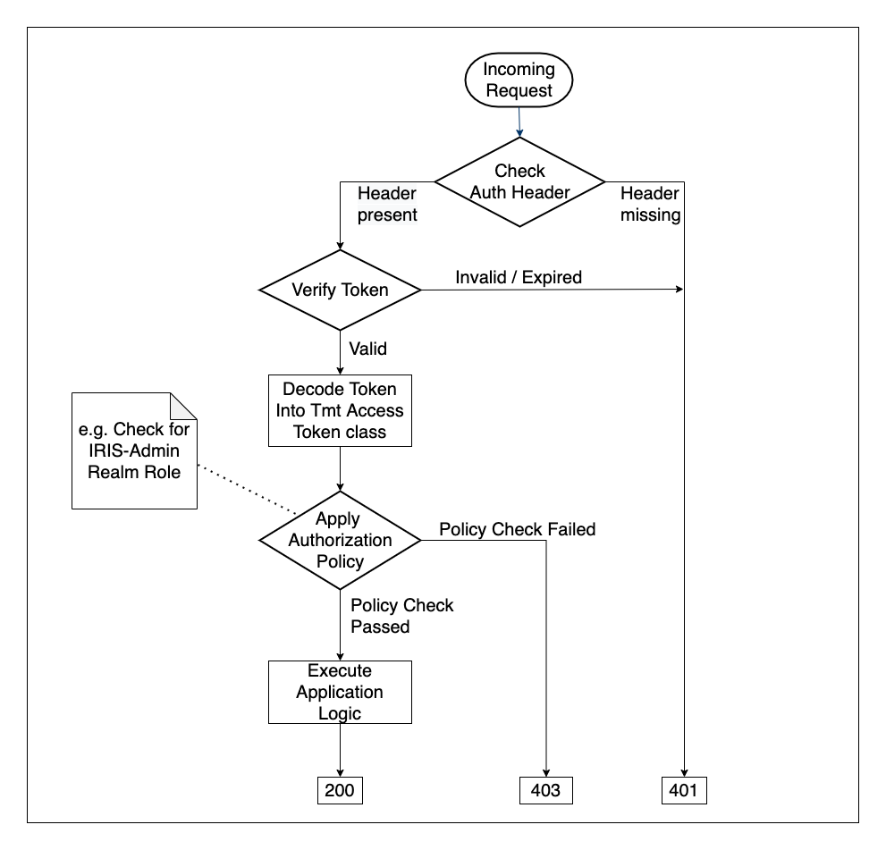
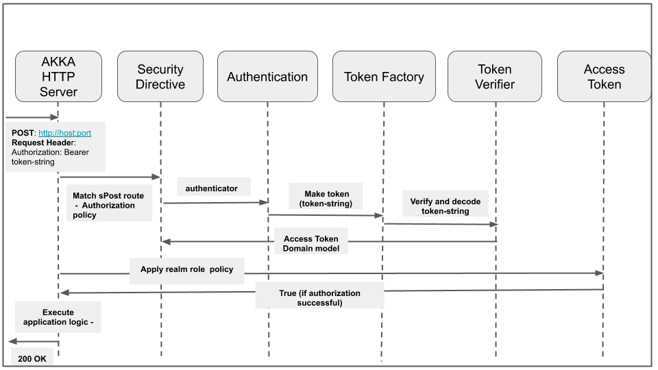

csw-aas-http - Akka HTTP Adapter
This is security adapter for akka http server applications. It exposes security directives e.g. sGet, sPost etc which enforce authentication and authorization based on authorization policies.
In order for akka http server to utilize keycloak it has to be registered as keycloak client. Please refer to keycloak documentation for details.
Types of tokens
ID Token -
The ID Token is a JSON Web Token (JWT) that contains user profile information (such as the user’s name and email) which is represented in the form of claims.
Access Token -
An Access Token is a credential that can be used by an application to access an API. Access Tokens is JSON web token digitally signed using JSON web signature (JWS). They inform the API that the bearer of the token has been authorized to access the API and perform specific actions specified by the scope that has been granted. Access token contains all the information that ID token has. Additionally, it has information related to realm and roles associated to user. This information is used for authorization based on RealmRole policy.
Request flow
When request comes to secure akka http server, it performs following steps.
- Authentication
Authentication involves token verification and decoding. Secure http endpoints expect access token to be provided in request header. For verification, it uses api provided by keycloak-adapter-core. For decoding csw-aas-http uses third party library - jwt-play-json. Authentication process verifies access token string and decode it into AccessToken domain model.
- Authorization
Authorization involves applying specified AuthorizationPolicy against AccessToken. Foe example, role based authorization involves checking access to secure api against roles information present in access token.
Following diagrams shows request flow for secure akka http server.

The core of this adapter is the SecurityDirectives class. Following diagram shows request flow through different core classes of this adapter. SecurityDirecives provided by this adapter are used while writing akka http server. For detailing following diagram shows akka http server and security directives as separate. Diagram depicts happy flow of POST request secured using realm role based authorization policy where server returns 200 OK code. When authentication and authorization is successful, application logic is executed and 200 OK is returned by server. e.g. create config file if user is authenticated and have admin role. In case of errors, server return 401 (unauthorized) or 403 (forbidden) e.g. - If token verification fails for invalid or expired token, TokenVerifier returns appropriate TokenVerificationFailure and akka http server returns 401. If authorization policy check fails then AccessToken returns false and then akka http server return 403.

Asynchronous nature of Akka-HTTP Routing layer
csw-aas-http uses authenticateOAuth2Async and authorizeAsync which are async variants of akka-http security directives. This allows it to run without blocking routing layer of Akka HTTP, freeing it for other requests.